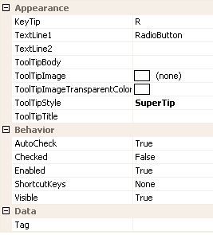

Ribbon Group Item RadioButton
Group Item RadioButton
You can add a radio button to either the group triple or the group lines container. Use the Checked property to define the checked state of the radio button. Figure 1 shows the list of all properties exposed by the group radio button item.

Figure 1 - Group Item RadioButton Properties
KeyTip
When KeyTips are displayed this property defines the KeyTip for the radio button instance. You should ensure that all items inside a tab have unique KeyTip values so that the user can always select items using keyboard access.
TextLine1
TextLine2
When the radio button is inside a container that displays it the full height of the group content area the TextLine1 and TextLine2 strings are shown on two separate lines underneath the radio button image. In all other cases the TextLine1 and TextLine2 are concatenated together with a space between them for showing horizontally after the radio button image.
ToolTipBody
ToolTipImage
ToolTipImageTransparentColor
ToolTipStyle
ToolTipTitle
When the user hovers the mouse over the radio button instance you can use these properties to define the tool tip that will be displayed. Use ToolTipTitle and ToolTipBody to define the two text strings for display and ToolTipImage for the associated image. If you image contains a color that you would like to be treated as transparent then set the ToolTipImageTransparentColor. For example, many bitmaps use magenta as the color to become transparent. To control how the text and image are displayed in the tool tip you can use the ToolTipStyle property.
AutoCheck
When defined as True this property will ensure that the radio but is automatically reset to false when any other radio button inside the same ribbon group becomes checked. This allows a group of radio button instances to act as a group where only a single radio button is checked at any time. It also allows the user to alter the checked state by clicking the control.
Checked
A boolean property this indicates if the radio button is currently checked or not.
Enabled
Used to define if the radio button is enabled or disabled at runtime.
ShortcutKeys
Define this property if you would like your application to have a shortcut key combination that invokes the radio button.
Visible
Use this property to specify if the radio button should be visible at runtime.
Tag
Associate application specific information with the object instance by using this property.
Events
Click
Occurs when the radio button has been pressed.
CheckedChanged
Occurs when the Checked property changes value.